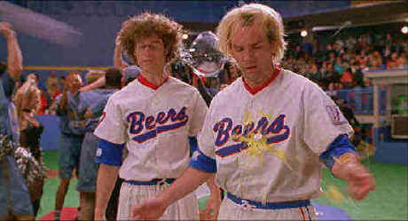

Universal/1999/104m/ANA 1.85
Here’s the pitch: these loser dudes in desperation to compete in a pickup two-on-two of basketball at a high school reunion party invent a new series of rules to find the bass (sic) to victory. The in your face comedy is inspired by the in your face shenanigans that make up the rules of BASEketball. The game begins on a driveway, inspires the neighborhood and spreads like California brush fires into a wind blown commercial league. Basically basketball sans movement, with some gross out innovations, BASEketball is played on a mock diamond set against the backdrop of a garage door. We get to share more than a season of play with the lunatic players during the course of the film.
 |
Fans pelt Coop and Remer during the happy dance ©Universal |
Trey Parker and
Matt Stone are left to sail the ball through the hoop in all the crucial situations.
Parker plays Joe "Coop" Cooper and Stone is Doug Remer, the nerdy creators of BASEketball.
Parker plays it with a forlorn puppy dog look and Stone misses few opportunities to mug. South
Park fans will recognize their voices and delivery from that TV series. Dian Bachar
relishes the punishment inflicted on his character Squeak Scolari and is good for many of
the legitimate laughs.
Directed by veteran of comic insanity David Zucker, the BASEketball
vision remains true to itself. Though the games seem endlessly the same, Zucker keeps the
drum beat for the comic zingers pounding incessantly if erratically. Personally, I
expected a grosser comic palette from BASEketball, but the balance leans toward
stupidity. The montage work is especially unimaginative. Add a star to the rating for
audiences from ten to fifteen, but parents concerned about sexual references and foul
language are forewarned.
The transfer is good enough to make you forget your watching a
video, even a top quality video like DVD. The images are sharp with no evident edge
enhancement. Colors are as bright and sassy as the comedy. The Dolby Digital 5:1 surround
information is rather laid back. I think some opportunities were missed to create sound
gags with aggressive sonic attitude. Included with the BASEketball is a promo
short. David Zucker sites the origin for BASEketball as a game created and played
on his driveway. The principals acknowledge that a huge amount of improvisation made it
into the final cut. Along with typical production notes there’s a theatrical trailer
and the BASEketball music video, which plays a lot worse than the film.